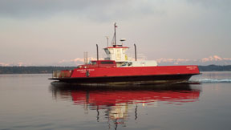

FINAL DRY DOCK UPDATE
10/5/02 5:45 pm - The ferry arrived back at the island at 3:30 pm. After a few minor repairs to the instrumentation, John, Steve, and Donnie squeezed in a 5:00 run to bring a few cars back from the mainland. The regular schedule resumes from the island at 6:30 pm tonight (Saturday).
Special thanks go to Nick, Mike, and Claudia for providing the Mo-Time shuttle. From the 6:15 am weekday commuters to the 9:00 pm Friday weekenders, they didn't miss a run. Thanks also to Doug and the ferry crew for their presence at the shipyard to keep on top of the extensive work being done.
|